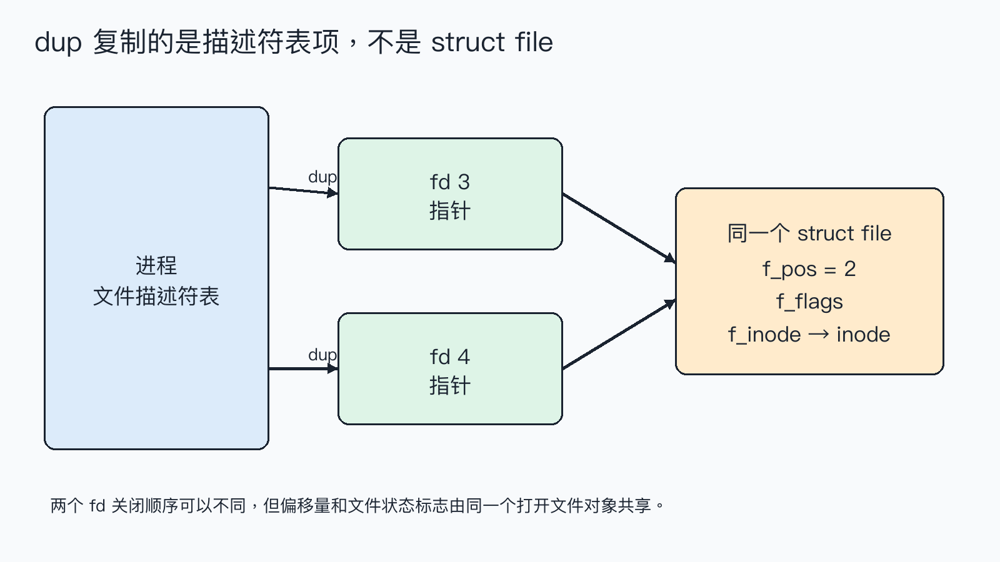
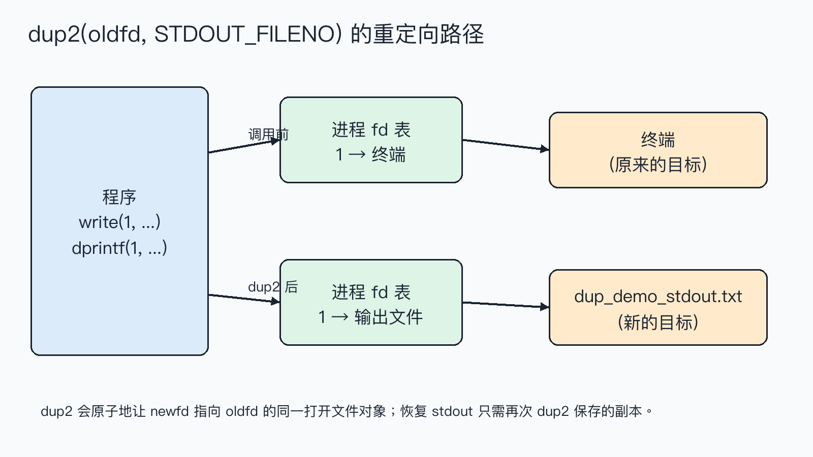

dup/dup2：共享文件对象与标准输出重定向dup(fd) 返回了一个新的整数，看起来像是“复制了 fd”。但如果先用一个 fd 移动偏移，再用另一个 fd 写入，文件为什么会从新的位置发生变化？答案是：复制的是进程文件描述符表中的一项，两个 fd 仍指向同一个打开文件对象；dup2 正是利用这一点完成重定向。
结论：
dup/dup2新建或替换的是 fd 表项，新旧 fd 共享打开文件描述中的当前偏移量和文件状态标志。把dup2(file_fd, STDOUT_FILENO)放在输出前，就能让标准输出写入file_fd指向的文件。
这篇文章怎么读？
无论你为什么点进来，都能各取所需——只解决手头问题，看第一章就够；想彻底搞懂，再往下读。
| 你是谁 | 看哪一章 | 会得到什么 |
|---|---|---|
| 搜索者 / 被推荐者 | 第一章 · 先解决问题 | 最快的答案（知其然） |
| 学习者 | 第二章 · 机制解释 | 底层的来龙去脉（知其所以然） |
| 编程者 | 第三章 · 工程使用 | 正确、能直接用的写法 |
| 求职者 | 第四章 · 面试提炼 | 会怎么问、怎么答（按需） |
dup 共享打开文件对象，dup2 可以改写标准输出下面的程序先打开一个包含 abc 的文件，再复制 fd。把原 fd 的偏移移到 1 后，用副本写入 X；接着保存标准输出，用 dup2 把它指向另一个文件。
环境是 macOS 14.8.8、Apple clang 16.0.0。完整可运行文件为 dup_demo.c，使用严格警告编译：
偏移在两个 fd 上同步变化，说明它们共享同一个打开文件对象；dup2 后写入标准输出的那一行被捕获到文件，而不是终端。实验只验证了普通文件和标准输出这两个场景，不代表所有设备都支持定位，也不替代并发写入的同步设计。
struct file在 Linux 中，进程拥有文件描述符表。表中的数字是索引，表项保存一个指向打开文件描述的引用；打开文件描述通常由内核的 struct file 表示，其中包含当前偏移 f_pos、状态标志以及指向 inode 的关系。dup 增加一个表项引用，并不复制这整个对象。

所以 lseek(fd, 1, SEEK_SET) 修改的是共享对象的 f_pos，随后通过 duplicate 写入就从偏移 1 开始；写完后两个 fd 观察到的偏移都变成 2。两次独立的 open 通常会得到两个不同的打开文件描述，它们的偏移互不共享，这与 dup 的结果不同。
dup2(oldfd, newfd) 做的是“让 newfd 指向 oldfd 指向的同一对象”。如果 newfd 原来已经打开，系统调用会先关闭它，再完成替换；当两个参数相等时则直接返回，不会先关闭再打开。替换动作由系统调用一次完成，适合建立重定向关系。

标准输出只是约定俗成的 fd 1。printf 最终经由 C 标准库和写入路径使用 fd 1；因此在进程内把 fd 1 的表项替换为文件，后续面向标准输出的写入自然沿着新的指向流入文件。这里的“重定向”不是修改 printf，而是修改它所使用的 fd。
dup。dup2(oldfd, newfd)。dup3，它能设置 O_CLOEXEC，但不能把相同 fd 作为两个参数。dup、dup2、open、close、read、write 都要检查返回值。dup2 成功后，原来的 oldfd 仍然有效；只有确认不再需要它时才关闭。重定向前先 dup(STDOUT_FILENO) 保存副本，恢复时调用 dup2(saved_stdout, STDOUT_FILENO)，最后关闭副本。不要在 dup2 前手动 close(newfd)：那会扩大出错窗口，而且 dup2 本身已经定义了替换行为。
如果混用 printf 和 write，还要考虑 C 流的缓冲：重定向前后应先 fflush(stdout)，或者像实验一样直接使用 dprintf/write。多线程程序修改进程级的 0、1、2 会影响其他线程，通常应在创建线程前完成。
边界清单：确认 oldfd 有效；确认目标 fd 没有被别的逻辑同时使用；处理 EINTR 等失败；普通文件写入仍可能短写；进程执行 exec 前是否需要 FD_CLOEXEC 要明确设计；不要把共享偏移误当成并发安全。
dup 复制的是文件描述符表项。新旧 fd 指向同一个打开文件描述，所以共享文件偏移和状态标志；dup2 还能把指定 fd 原子替换为这个指向，因此常用来做 stdin/stdout/stderr 重定向。
dup 和再次 open 有什么区别？ 再次 open 通常得到新的打开文件描述，偏移独立；dup 共享偏移和状态。
为什么 dup2 前不用先 close(newfd)？ 因为 dup2 成功时会完成关闭和替换，手动关闭会增加竞态窗口。
父子进程也共享偏移吗？ fork 后继承的 fd 指向原来的打开文件描述，因此通常共享偏移；这是另一个需要结合并发和写入原子性分析的问题。
转载说明：本文用于技术学习与交流，转载请保留原文与出处。
本文为公众号「理解力笔记」原创。转载请联系作者，并保留出处。